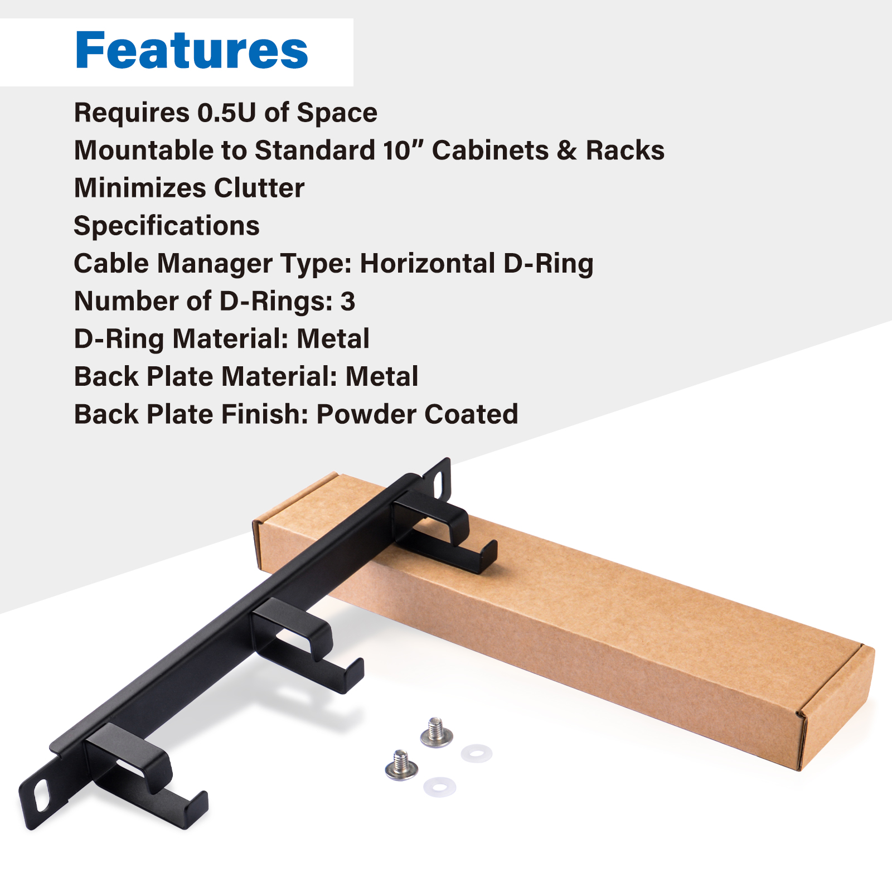
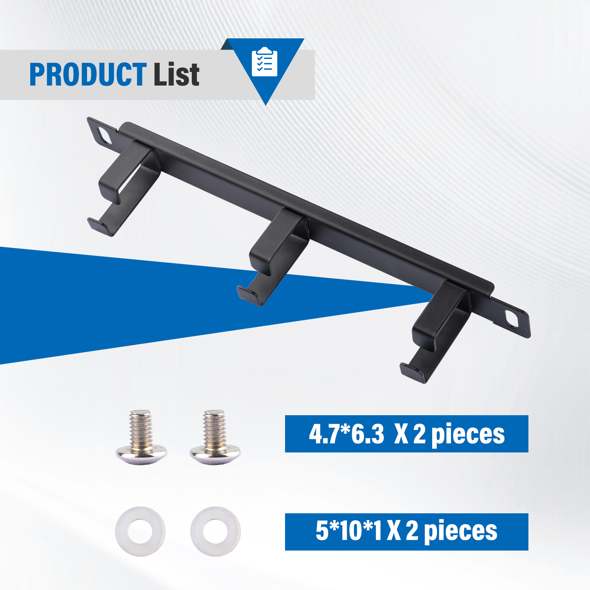
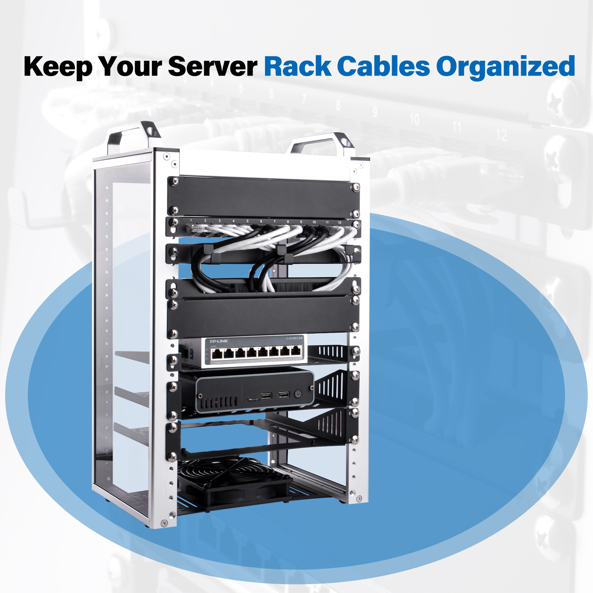
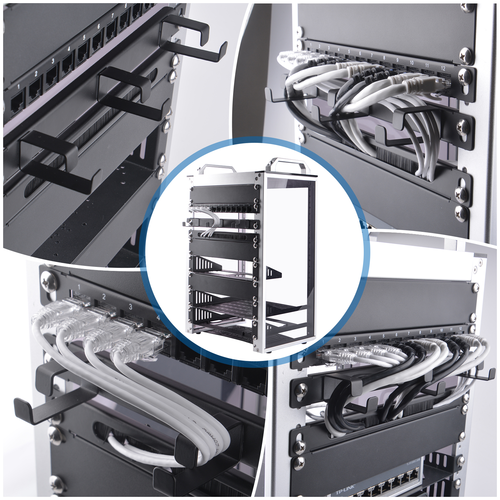
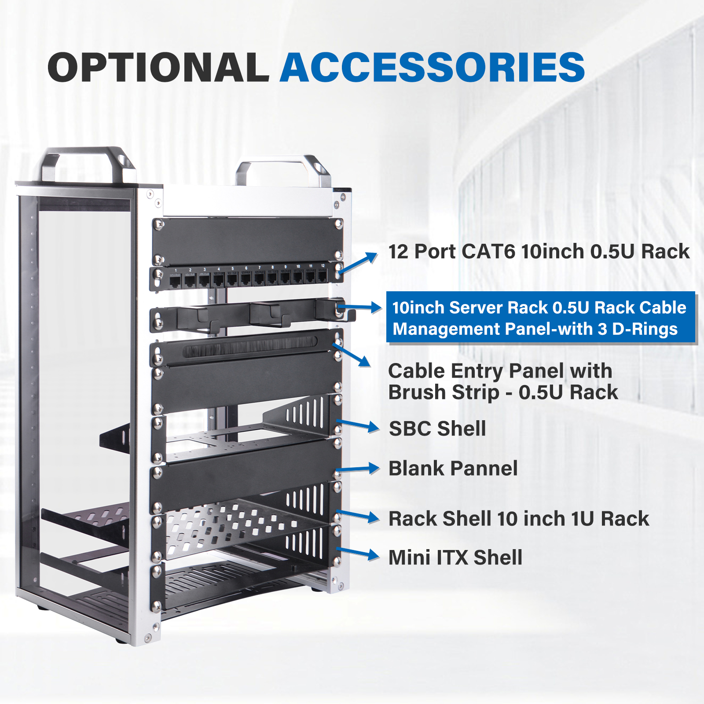

10-inch Server Rack 0.5U Rack Cable Management Panel-with 3 D-Rings
- SKU: DP-0044
- Name: 10-inch Server Rack 0.5U Rack Cable Management Panel-with 3 D-Rings for DeskPi Rackmate T1

Description
The 10-inch Server Rack 0.5U Rack Cable Management Panel with 3 D-Rings is a cable management panel designed for server racks. This panel is typically mounted at the front or back of the rack to organize and secure cables, keeping the interior of the rack neat and orderly. It usually has the following features:
Features

Size and Design
- Height: 0.5U (1U equals 1.75 inches)
- Width: 10 inches
- Compact design to save rack space and fit standard 19-inch racks

D-Ring Hooks
- Equipped with D-Ring hooks for securing and guiding cables

Cable Capacity
- Accommodates a specific number of cables, depending on the panel's design and size
Material and Construction
- Made of sturdy materials like steel or aluminum
- Powder-coated finish for durability and corrosion resistance
Installation
- Mounts on standard EIA 19-inch rack rails for easy installation

Additional Features
- May include brush strips or other features to enhance air flow and reduce dust accumulation
Maintenance and Compatibility
- Reduces strain on equipment ports to protect rack-mounted devices
- Improves airflow within the rack for optimal equipment operation and reduced risk of overheating
Package Includes
Accessories Purchase URL


- Rackmate 2U Rack Mount with PCIE NVME Board for Raspberry Pi 5/4B: DP-0046
- Rack shelf DP-0031
- Blank Pannel DP-0032
- SBC shelf DP-0033
- 10-Inch Network Switch DP-0034
- Mini ITX shelf DP-0035
- CAT6A Ethernet Cable(0.2M) L-0094
- CAT6A Ethernet Cable(0.5M) L-0095
- DC PDU Lite 7-CH 0.5U for DeskPi Rackmate T1:DP-0042
- 10-inch Server Rack 0.5U Rack Cable Management Panel-with 3 D-Rings: DP-0044

Amazon Links:
- DeskPi RackMate T1:
- Network Patch Panel 12 Port CAT6 10inch 0.5U
- SBC shelf 10 inch 1U Rack
- Mini ITX shelf 10 inch 1U Rack
- Blank Pannel 10 inch 1U Rack
- SBC shelf 10 inch 1U Rack, with 2PCS Micro HDMI to HDMI Adapter Board for Raspberry Pi 5 / Pi 4B
- Micro HDMI to HDMI Adapter Board for Raspberry Pi 5 / Pi 4B
- GeeekPi 4PCS Cat6A Ethernet Cable, Snagless Short Shielded Network Cable, White (20 cm/0.65 ft)
US Store (0.2m)
UK Store (0.2m)
UK Store (0.5m)
- Rack shelf 10 Inch 0.5U Rack Shelf
- DeskPi 10inch Server Rack 0.5U Rack Cable Management Panel-with 3 D-Rings
- DeskPi DC PDU Lite 7-CH 0.5U for DeskPi Rackmate T1